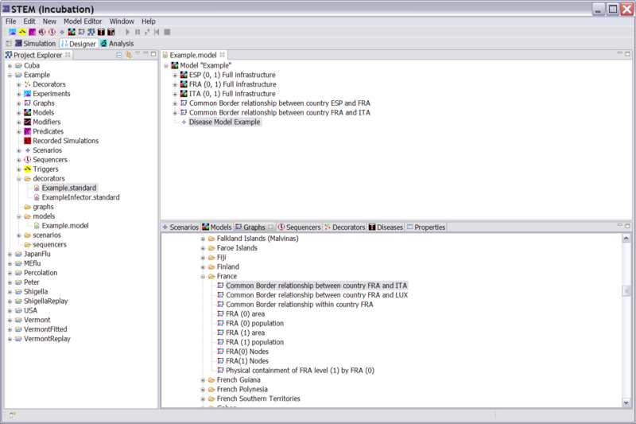
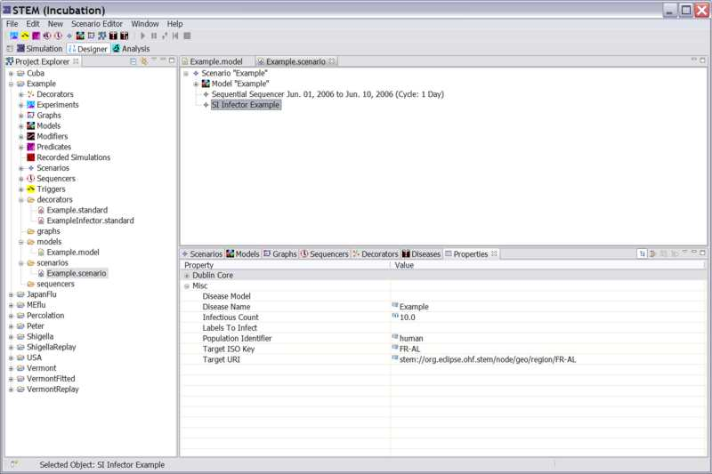
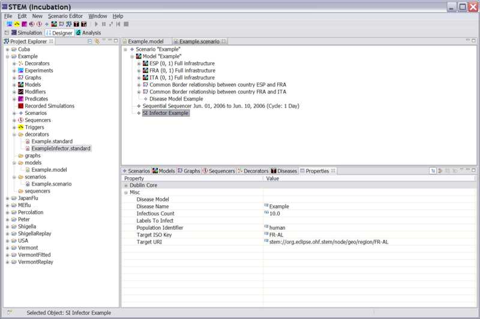

Stem comes with a number of build in Model each containing preconfigured graphs. It also comes with preconfigured Models for every country and for every continent. These may be found in the Designer Perspective under the Models tab. See: Models>Geography
Adding a new disease vector or transmission path between two locations required adding a new Edge between between the two respective nodes. Before we discuss how to define an entirely new type of edge, it is important to learn how to compose a graph taking advantage of build in edge collections that are already included in STEM.
Composing a Graph
Suppose you want to create a new simulation scenario for some disease involving three countries; France, Italy, and Spain. Stem comes with models for each country but does not come with a graph for that group of three. We must compose it.
1) Follow the example in the section on Creating a new Project to create a project folder for this new scenario.
2) Follow the example in the section on Creating a new Model to create a parent model. In the following example we will assume that you used the name "Example" for this parent model.
3) Click on your "Example" model to open it in the Resource Set window.
4) Click on the models folder and open the Folders
>STEM>Geography>Political>Country>ESP
Drag the model entitled "ESP(0, 1) Full Infrastructure" into your parent "Example" model.
"ESP(0, 1) Full Infrastructure" is the full infrastructure
for Spain with admin 0 and admin 1 resolution. It is itself a graph with
containment relationships and
adjacency relationships for Spain.
5) Repeat Step 4 for France and Italy
>STEM>Geography>Political>Country>FRA
>STEM>Geography>Political>Country>ITA
6) Your parent model "Example" will appear next to a blue triangle. If you expand this node by clicking on (+) next to the model you will see three new blue triangles representing the three country level graphs you added to your model (See Figure 1). However, at this point there are no connections between the three countries you added. These connections or "Common Border" relationships between any two countries must be added once per pair of countries. They may be found under the Graphs tab. Any two way edge is place in the folder of the countries who's three letter country code appears first alphabetically.
|  |
| Figure 1: Composing a Graph |
7) To add the border between France and Spain select the GRAPHS tab and click on:
>STEM>Geography>Political>Country>ESP
drag the icon for "Common Border relationship between country ESP and FRA" into your "Example" model. It will appear at the same level in the tree as the countries Spain and France. Note that the Edges connecting Spain and France may be found in the ESP folder because ESP comes before FRA alphabetically.
8) To add the border between France and Italy select the GRAPHS tab and click on:
>STEM>Geography>Political>Country>FRA
drag the icon for "Common Border relationship between country FRA and ITA
9) Follow the instructions for Creating a new Disease and drag your new Disease into your "Experimental" Model. Note that any disease (or all diseases) appear under the top level MODEL node. See figure 2.
|  |
| Figure 2: A Disease has been added to the Model |
10) Follow the instructions Creating a new Scenario. Add your model to the Scenario. Then follow instructions for Creating a new Sequencer and Creating a new Infector. See Figure 3 below. The Sequencer, the Infector, and your new "Example" Model are all part of a Scenario node. Expand your model to see the graph of nodes and edges, as well as the disease or disease you have defined.
|  |
| Figure 3: The Example Scenario is ready to run. See the proper hierarchical structure of this scenario in the Resource Set window. |
Defining a New Graph Edge
In the example above we composed a graph from existing components. Suppose you wanted to add a new relationship between two places. Take for example the Staten Island Ferry between Staten Island and Manhattan Island in NY.
this needs to be written.